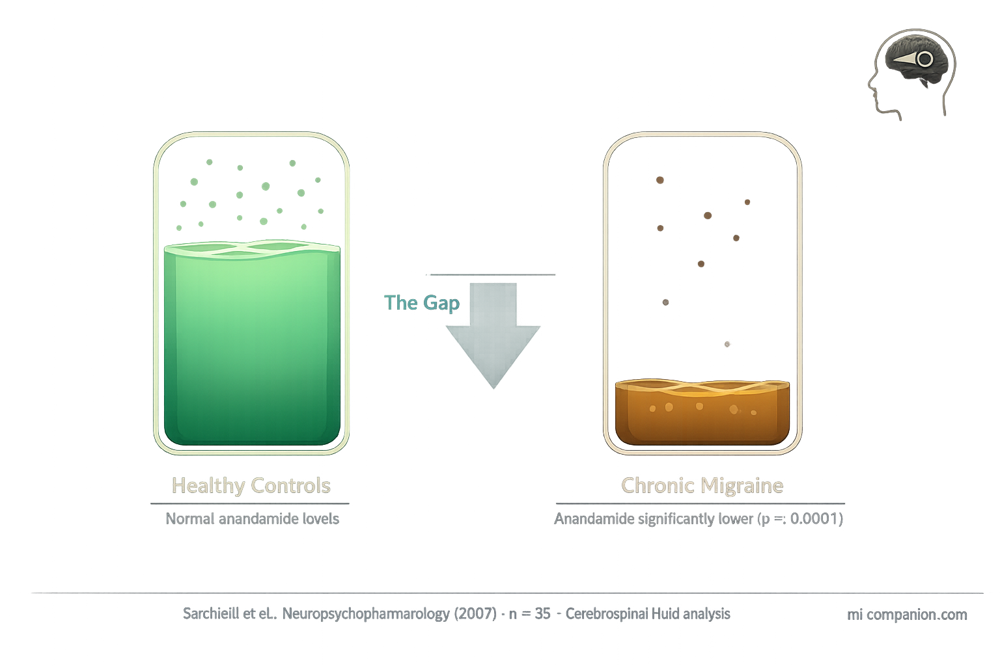

By Rustam Iuldashov
30 years lived experience with chronic migraine | Sources: 24 peer-reviewed references including Headache (n=92 RCT), Neuropsychopharmacology (n=35), The Journal of Headache and Pain (2024 review), Cephalalgia (2025 preclinical) | Last updated: March 2026
Medical Review: This content is based on peer-reviewed research from Headache, Neuropsychopharmacology, The Journal of Headache and Pain, Cephalalgia, Cannabis and Cannabinoid Research, The Journal of Pain, and Frontiers in Neuroscience.
Important Notice: This article is for informational purposes only and does not replace professional medical advice. The author is not a licensed physician or healthcare professional. Always consult your doctor before making changes to your treatment plan.
Key Takeaways
- The first placebo-controlled RCT found vaporized THC+CBD superior to placebo for acute migraine pain relief (67.2% vs. 46.6%), pain freedom, and most bothersome symptom freedom at 2 hours, with benefits sustained at 24 and 48 hours[1]
- CBD alone performed no better than placebo for any outcome — despite years of marketing as a migraine remedy[1]
- People with chronic migraine have significantly lower anandamide levels in their cerebrospinal fluid, supporting the Clinical Endocannabinoid Deficiency hypothesis[3, 4]
- Cannabis users with chronic migraine were six times more likely to develop medication overuse (rebound) headache compared to non-users[11]
- Cannabinoids interact with the same CGRP pathway targeted by the newest migraine drugs, potentially offering complementary mechanisms — but this remains untested in humans[7, 8]
- Women may be disproportionately affected by endocannabinoid deficits due to estrogen-regulated anandamide breakdown that fluctuates across the menstrual cycle[14, 15, 16]
In 1892, Sir William Osler — a founder of modern medicine — called cannabis “probably the most satisfactory remedy” for migraine. Doctors prescribed it for the next 45 years. Then prohibition arrived, research stopped, and a century of silence followed.
That silence just broke.
In 2024, researchers at the University of California, San Diego published results from the first placebo-controlled trial of cannabis for acute migraine — 92 participants, four treatments, double-blind crossover design.[1] The findings cracked open a door that mainstream neurology had kept locked for decades.
But the cannabis-migraine story doesn’t end at “it works.” The same plant that can abort an attack may also be priming you for more of them.
Welcome to the most complicated question in migraine medicine.
Your Brain Already Makes Cannabis
Before you touch a single leaf, your body runs its own cannabis-like system. The endocannabinoid system (ECS) is a network of receptors, enzymes, and signaling molecules that helps regulate pain, inflammation, mood, and nausea.[2] Its two lead molecules — anandamide (AEA) and 2-arachidonoylglycerol (2-AG) — act like dimmer switches on pain signals. Turn them up, and the volume drops.
Here’s where migraine enters the picture.
In 2007, researchers at the University of Perugia measured anandamide in the cerebrospinal fluid — the liquid that bathes the brain — of people with chronic migraine. The gap stunned them: migraine patients had dramatically lower anandamide levels than healthy controls, with a p-value below 0.0001.[3] That’s the kind of statistical confidence researchers almost never see.
This finding became the cornerstone of a hypothesis first proposed by neurologist Ethan Russo in 2004: Clinical Endocannabinoid Deficiency. The idea is elegant. Migraine, fibromyalgia, and irritable bowel syndrome — three conditions that frequently overlap and resist standard treatment — might share a single root: an endocannabinoid system running on empty.[4, 5]
If true, supplementing that system with plant-derived cannabinoids isn’t masking symptoms. It’s replacing something the body fails to produce in sufficient quantities.
An elegant theory. But until recently, it lacked a critical piece: a proper trial.
The endocannabinoid gap: Chronic migraine patients showed significantly lower anandamide levels in cerebrospinal fluid vs. healthy controls (p<0.0001).[3] This deficit may underlie the overlap between migraine, fibromyalgia, and IBS — three conditions that share hyperalgesia, central sensitization, and treatment resistance.[4, 5]

The Trial That Changed the Conversation
The UC San Diego trial, led by headache neurologist Nathaniel Schuster, gave each participant four treatments for four separate migraine attacks: vaporized 6% THC, 11% CBD, a combination of 6% THC plus 11% CBD, or placebo cannabis flower with the active compounds chemically extracted. Nobody — not patients, not researchers — knew which was which.[1, 6]
At two hours, the THC-CBD combination told a clear story. Pain relief: 67.2% versus 46.6% for placebo. Complete pain freedom — the toughest endpoint in migraine research — reached 34.5% compared to 15.5%. Freedom from the most bothersome symptom: 60.3% versus 34.5%. Benefits held at 24 and 48 hours.[1]
Two findings forced a double-take.
First, THC alone reduced pain (68.9% vs. 46.6%) but failed to achieve pain freedom or most bothersome symptom freedom. CBD alone? It performed no better than placebo on any measure.[1, 6] This matters enormously. The CBD industry has marketed cannabidiol as a migraine remedy for years. This trial says otherwise — at least for acute attacks. It’s the combination that works.
Second — and this is the hidden gem of the data — the THC-CBD combination specifically reduced photophobia and phonophobia but not nausea.[1] Why does that matter? THC is a well-known anti-nausea agent. If the benefit came simply from the “high” dampening symptom awareness, nausea should improve first. Instead, the combination targeted the exact sensory processing abnormalities that define migraine as a neurological event. Not just pain. The disease itself.
“This is the first real — to me — compelling evidence for the anti-migraine effects of cannabis in humans,” Schuster said when presenting final results at the 2025 American Headache Society meeting.[6] He also emphasized a point that deserves repeating: patients who treated earlier — within the first two hours of an attack — responded better than those who waited. Early treatment wins. Always.
The question the trial couldn’t answer is why the combination worked — and that answer lives in a molecule you may already know.
CBD alone doesn’t work for acute migraine. In the first placebo-controlled trial, CBD-only cannabis performed no better than placebo on any measure — pain relief, pain freedom, or most bothersome symptom freedom. Only the THC+CBD combination achieved significant results.[1]
The CGRP Connection Hiding in Plain Sight
If you’ve followed migraine science, you know CGRP — calcitonin gene-related peptide — the molecule behind the newest migraine drugs, from Aimovig to Nurtec. When the trigeminal nerve fires during an attack, it floods the meninges with CGRP, igniting inflammation and pain.[7]
Cannabinoids intersect this pathway in ways that startled researchers.
Anandamide — the same molecule found depleted in migraine patients’ spinal fluid — directly inhibits CGRP release from trigeminal nerve fibers through CB1 receptor activation.[7, 8] In animal models, a synthetic anandamide analog reduced CGRP levels in plasma, trigeminal ganglia, and the brainstem while blocking mast cell degranulation — one of the key inflammatory events in migraine.[9]
A 2024 review in The Journal of Headache and Pain mapped six immune cell types that carry both cannabinoid receptors and CGRP receptors: macrophages, monocytes, mast cells, dendritic cells, B cells, and T cells.[7] The implication is provocative: cannabinoids could theoretically modulate the same pathway targeted by existing CGRP-blocking drugs. Nobody has tested this combination clinically. But the molecular framework is there, and research teams from Iowa to Brazil are building the case.
In early 2025, a preclinical study in Cephalalgia confirmed the pattern across three different mouse migraine models and two independent laboratories. Photophobia improved only with a CBD-THC combination — not with either compound alone.[10] The mirror image of the human trial. Two species. Same answer.
⚠️ When to Seek Emergency Help
Cannabis can cause elevated heart rate, blood pressure changes, and in rare cases, cerebral vasoconstriction. If you experience a sudden, explosive headache unlike anything you’ve had before (“thunderclap headache”), sudden vision loss, one-sided weakness, slurred speech, or confusion after using cannabis or any other substance — call your local emergency number immediately.
These may be signs of a stroke or other life-threatening event. Do not use this article to self-diagnose or self-treat.
The Dark Side: When Relief Becomes Rebound
Now for the part nobody wants to hear.
In 2021, Stanford University researchers reviewed records of 368 chronic migraine patients. Among cannabis users, 81% had medication overuse headache — the dreaded “rebound.” Among non-users, the rate was 41%. After adjusting for every available confounder, cannabis users were six times more likely to suffer rebound headache.[11]
Six times. That number demands attention.
The researchers also uncovered a bidirectional link between cannabis and opioid use: people using one were significantly more likely to use the other.[11] Both substances influence the periaqueductal gray — a brainstem region that acts as a master volume knob for pain processing — and both can recalibrate the brain’s pain threshold when used too frequently.[11, 12]
The paradox cuts deep. The very endocannabinoid system running low in migraine can become further dysregulated by too-frequent external cannabinoid exposure. It’s structurally identical to the triptan paradox — the most effective acute treatment becomes the engine of chronic headache when overused.
A separate analysis of over 12,000 cannabis-treated headache sessions found that while acute severity dropped by roughly 50%, doses escalated over time — users needed progressively more to achieve the same effect.[13] For general headache, efficacy also declined with repeated use. For migraine specifically, efficacy appeared more stable, though consumption still crept upward.[13] Tolerance in one domain. Not the other. Nobody fully understands why.
The lead researcher of the Stanford study was candid about its limits: because the design was retrospective, the direction of causality remains unclear. Were patients using cannabis because they already had rebound headache? Or did cannabis contribute to developing it? The data can’t separate the two.[11] But the signal is strong enough to warrant caution.
The rebound risk in numbers: Among 368 chronic migraine patients, cannabis users were 6× more likely to have medication overuse headache (81% vs. 41%; adjusted OR 6.3, p<0.0001).[11] Separately, across 12,293 cannabis-treated headache sessions, doses escalated over time while efficacy for general headache declined — suggesting tolerance development.[13]
The Estrogen Factor
Migraine affects three times more women than men. The endocannabinoid story has a gender chapter — and it may be the most underappreciated angle in this entire field.
Women with migraine show heightened activity of FAAH, the enzyme that breaks down anandamide, along with increased activity of the anandamide membrane transporter in their platelets.[14, 15] The net effect: faster anandamide destruction, lower levels.
The driver? Estrogen. It regulates FAAH expression. When estrogen drops — during menstruation, perimenopause, or postmenopause — FAAH activity rises, anandamide plummets, and the pain threshold falls.[15, 16] This may partly explain why menstrual migraine is so notoriously difficult to treat, and why some women report that cannabis provides specific relief during their period.
Preclinical research consistently finds female rodents more sensitive to THC’s effects than males.[16] At the University of Arizona, researcher Tally Largent-Milnes has been mapping endocannabinoid system expression in brain regions tied to migraine — including the periaqueductal gray — and finding it fundamentally different between sexes.
“This seems to be a female-mediated system,” Largent-Milnes said. “It’s likely that hormone regulation of the endocannabinoid system is driving female susceptibility to headache.”[17]
Her lab is now investigating whether boosting 2-AG — the second major endocannabinoid, which has been largely overlooked in migraine research — could offer targeted relief without the side effects of plant cannabis.[17] It’s early. But it points toward a future where the treatment isn’t the plant itself, but drugs designed to enhance what your body already makes.
The endocannabinoid system is sexually dimorphic. Estrogen regulates anandamide breakdown. When estrogen falls, so does the pain threshold. This may be one reason migraine disproportionately affects women.
What This Means for You
The science draws clear lines in some places — and honest blanks in others.
What we know: A specific combination of low-dose THC and CBD, delivered by vaporization early in a migraine attack, outperforms placebo in the first rigorous trial of its kind.[1] CBD alone doesn’t work for acute attacks.[1] The endocannabinoid system is measurably disrupted in chronic migraine.[3, 4, 5] Cannabis interacts with the same CGRP pathway targeted by the newest migraine medications.[7, 8] And frequent use carries a real, quantifiable risk of medication overuse headache.[11, 12]
What we don’t know: The optimal dose for prevention. Whether cannabis can safely combine with CGRP-targeting drugs. How long-term use affects migraine frequency over years. Whether edibles or tinctures offer a safer profile than inhalation. Whether certain genetic profiles predict who benefits and who doesn’t.
Schuster himself put it plainly: standard treatments — triptans, gepants — should be tried first. Cannabis is a conversation to have with your doctor when conventional options haven’t worked, not a first-line choice.[6]
After 30 years of living with migraine, what strikes me most is that we’re finally having this conversation with data instead of anecdotes. For a century, patients who found relief with cannabis had nothing but their own experience as evidence. Now there’s a randomized controlled trial in Headache, a landmark CSF study in Neuropsychopharmacology, and a growing body of preclinical work connecting cannabinoids to the molecular architecture of migraine itself.
The question was never really whether cannabis “works.” It was whether we’d take it seriously enough to find out how, for whom, and at what cost.
That work has begun.
⚕️ Important Medical Disclaimer
This article is for informational and educational purposes only and does not constitute medical advice, diagnosis, or treatment. The author, Rustam Iuldashov, is not a licensed physician, neurologist, or healthcare professional. He is a patient advocate with 30 years of personal experience living with chronic migraine.
All clinical claims in this article are sourced from peer-reviewed research published in indexed medical journals. Study designs and sample sizes are noted where applicable.
Always consult a qualified healthcare provider for questions about your individual health, migraine treatment, or medication decisions.
Cannabis remains a controlled substance in many jurisdictions. Legal status varies by country and state. Nothing in this article should be interpreted as encouragement to obtain, use, or distribute cannabis in violation of applicable law. The efficacy data presented here comes from a research setting with standardized, NIDA-supplied cannabis flower — not commercial dispensary products, which may vary widely in composition and potency. This content was last reviewed for accuracy on March 2026.
References
- Schuster NM, Wallace MS, Marcotte TD, Buse DC, Lee E, Liu L, Sexton M. “Vaporized Cannabis versus Placebo for Acute Migraine: A Randomized, Double-Blind, Placebo-Controlled Crossover Trial.” Headache (2025). doi:10.1111/head.70025. Study design: RCT (double-blind, crossover). n=92.
- Cristino L, Bisogno T, Di Marzo V. “Cannabinoids and the Expanded Endocannabinoid System in Neurological Disorders.” Nature Reviews Neurology, 16(1):9–29 (2020). doi:10.1038/s41582-019-0284-z. Study design: Review.
- Sarchielli P, Pini LA, Coppola F, Rossi C, Baldi A, Mancini ML, Calabresi P. “Endocannabinoids in Chronic Migraine: CSF Findings Suggest a System Failure.” Neuropsychopharmacology, 32(6):1384–1390 (2007). doi:10.1038/sj.npp.1301246. Study design: Cross-sectional. n=35.
- Russo EB. “Clinical Endocannabinoid Deficiency (CECD): Can This Concept Explain Therapeutic Benefits of Cannabis in Migraine, Fibromyalgia, Irritable Bowel Syndrome and Other Treatment-Resistant Conditions?” Neuroendocrinology Letters, 25(1/2):31–39 (2004). Study design: Theoretical review.
- Russo EB. “Clinical Endocannabinoid Deficiency Reconsidered: Current Research Supports the Theory in Migraine, Fibromyalgia, Irritable Bowel, and Other Treatment-Resistant Syndromes.” Cannabis and Cannabinoid Research, 1(1):154–165 (2016). doi:10.1089/can.2016.0009. Study design: Narrative review.
- Schuster NM. “Final Analyses Highlight Efficacy of THC-CBD Combination Therapy for Acute Migraine.” Presentation at 2025 American Headache Society Annual Meeting, Minneapolis, MN, June 19–22, 2025. Study design: Conference presentation (from RCT data).
- Zorrilla E, Della Pietra A, Russo AF. “Interplay Between Cannabinoids and the Neuroimmune System in Migraine.” The Journal of Headache and Pain, 25(1):178 (2024). doi:10.1186/s10194-024-01883-3. Study design: Narrative review.
- Akerman S, Holland PR, Goadsby PJ. “Cannabinoid (CB1) Receptor Activation Inhibits Trigeminovascular Neurons.” Journal of Pharmacology and Experimental Therapeutics, 320(1):64–71 (2007). doi:10.1124/jpet.106.106971. Study design: Preclinical (animal model).
- Greco R, Demartini C, Zanaboni AM, et al. “Endocannabinoid System and Migraine Pain: An Update.” Frontiers in Neuroscience, 12:172 (2018). doi:10.3389/fnins.2018.00172. Study design: Review.
- Zorrilla E, et al. “Combined Effects of Cannabidiol and Δ9-Tetrahydrocannabinol Alleviate Migraine-Like Symptoms in Mice.” Cephalalgia, 45(2):3331024251314487 (2025). doi:10.1177/03331024251314487. Study design: Preclinical (multi-model, multi-lab). n=multiple cohorts.
- Zhang N, Woldeamanuel YW. “Medication Overuse Headache in Chronic Migraine Patients Using Cannabis: A Case-Referent Study.” Headache, 61(8):1237–1246 (2021). doi:10.1111/head.14185. Study design: Retrospective case-referent. n=368.
- Pini LA, Guerzoni S, Cainazzo MM, et al. “Nabilone for the Treatment of Medication Overuse Headache: Results of a Preliminary Double-Blind, Active-Controlled, Randomized Trial.” The Journal of Headache and Pain, 13(8):677–684 (2012). doi:10.1007/s10194-012-0490-1. Study design: RCT (double-blind, crossover). n=30.
- Cuttler C, Spradlin A, Cleveland MJ, Craft RM. “Short- and Long-Term Effects of Cannabis on Headache and Migraine.” The Journal of Pain, 21(5–6):722–730 (2020). doi:10.1016/j.jpain.2019.11.001. Study design: Observational (app data). n=12,293 headache sessions, 7,441 migraine sessions.
- Cupini LM, Bari M, Battista N, et al. “Biochemical Changes in Endocannabinoid System Are Expressed in Platelets of Female but Not Male Migraineurs.” Cephalalgia, 26(3):277–281 (2006). doi:10.1111/j.1468-2982.2005.01031.x. Study design: Cross-sectional. n=38.
- Lichte AB, et al. “The Use of Cannabis for Headache Disorders.” Cannabis and Cannabinoid Research, 2(1):61–71 (2017). doi:10.1089/can.2016.0033. Study design: Review.
- Craft RM. “Sex Differences in the Endocannabinoid System in Pain.” Pharmacology, Biochemistry and Behavior, 202:173107 (2021). doi:10.1016/j.pbb.2021.173107. Study design: Review.
- Largent-Milnes TM. Research summary, University of Arizona Health Sciences (2022). Study design: Preclinical.
- Nicolodi M, Sicuteri F. Presented at 3rd Congress of the European Academy of Neurology, Amsterdam (2017). THC-CBD vs. amitriptyline for migraine prevention. n=79. Study design: Open-label, controlled.
- Rhyne DN, Anderson SL, Gedde M, Borgelt LM. “Effects of Medical Marijuana on Migraine Headache Frequency in an Adult Population.” Pharmacotherapy, 36(5):505–510 (2016). doi:10.1002/phar.1673. Study design: Retrospective chart review. n=121.
- Biringer RG. “Treatment of Migraine With Phytocannabinoids, the Involvement of Endocannabinoids in Migraine, and Potential Mechanisms of Action.” Pain Research and Management (2025). doi:10.1155/prm/7210953. Study design: Review.
- Cuttler C, Mischley LK, Sexton M. “Sex Differences in Cannabis Use and Effects: A Cross-Sectional Survey of Cannabis Users.” Cannabis and Cannabinoid Research, 1(1):166–175 (2016). doi:10.1089/can.2016.0010. Study design: Cross-sectional survey. n=2,374.
- Rossi C, Pini LA, Cupini ML, et al. “Endocannabinoids in Platelets of Chronic Migraine Patients and Medication-Overuse Headache Patients: Relation with Serotonin Levels.” European Journal of Clinical Pharmacology, 64(1):1–8 (2008). doi:10.1007/s00228-007-0391-4. Study design: Cross-sectional. n=60.
- El-Dessouki AM. “Bridging Gaps in Migraine Management: A Comprehensive Review.” Pharmaceuticals, 18(2):139 (2025). doi:10.3390/ph18020139. Study design: Review.
- Perrotta A, Arce-Leal N, Tassorelli C, et al. “Acute Reduction of Anandamide-Hydrolase (FAAH) Activity Is Coupled with a Reduction of Nociceptive Pathways Facilitation in Medication-Overuse Headache Subjects After Withdrawal Treatment.” Headache, 52(9):1350–1361 (2012). doi:10.1111/j.1526-4610.2012.02171.x. Study design: Prospective cohort. n=27.

How We Create Content
- Peer-reviewed sources only. Headache, Neuropsychopharmacology, The Journal of Headache and Pain, Cephalalgia, Cannabis and Cannabinoid Research, The Journal of Pain, Frontiers in Neuroscience, Journal of Pharmacology and Experimental Therapeutics, European Journal of Clinical Pharmacology, Pharmacology Biochemistry and Behavior.
- Study transparency. Study design and sample sizes noted for all clinical references.
- Source verification. All claims backed by numbered references with DOI links.
- Experience + Science. 30 years personal migraine experience combined with peer-reviewed evidence.
- Regular updates. Articles reviewed when significant new research emerges.
- No conflicts of interest. No funding from cannabis companies, pharmaceutical manufacturers, dispensaries, or advocacy organizations.
Track What Your Doctor Can’t See
If you’re exploring cannabis for migraine — or any treatment — a detailed diary is the most powerful tool you have. Log your attacks, triggers, treatments, and outcomes. Build the personal dataset that turns guesswork into evidence your neurologist can use.
Last reviewed: March 2026
Next scheduled review: September 2026